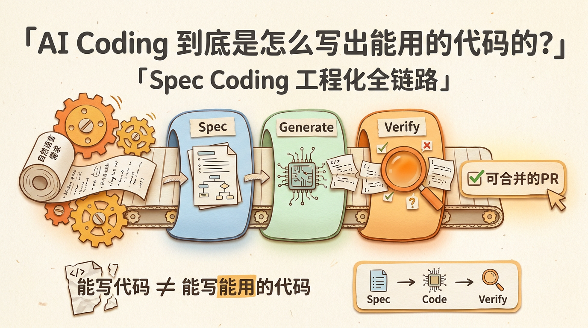
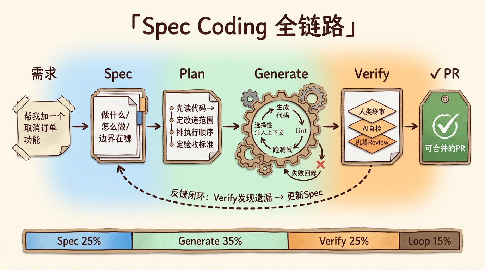
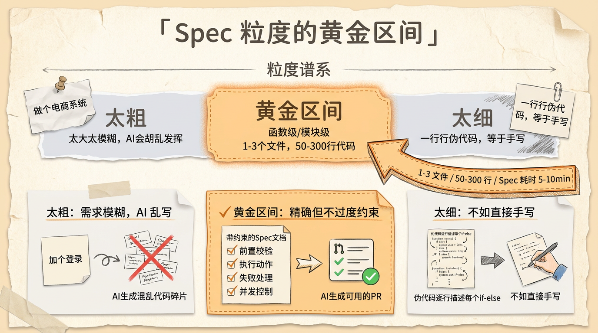
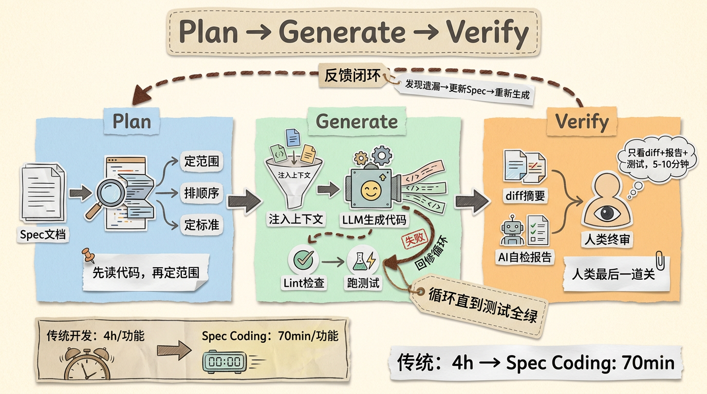
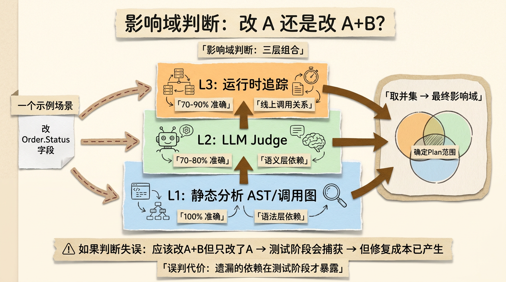
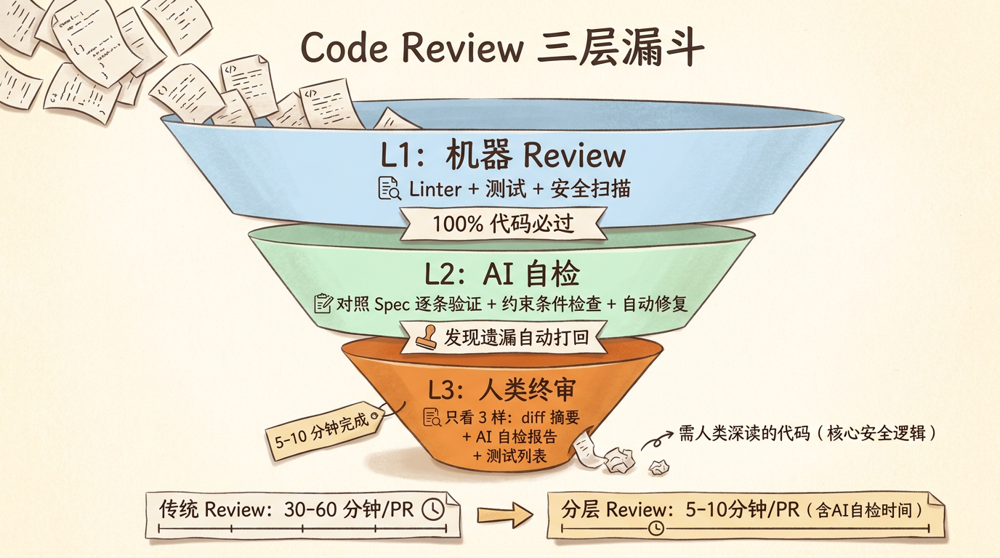

AI Coding到底是怎么写出能用的代码的？——Spec Coding工程化全链路
如果你用过 Cursor 或 Claude Code 写代码，你一定体验过这种感觉：
给它一句”帮我加一个用户登录功能”，它刷刷刷生成几百行代码，看着像模像样。但你细看——密码没加密，session 没过期时间，SQL 查询有注入风险，错误处理全是一个 print(e)。能用吗？能用。敢用吗？不敢。
这就是 AI Coding 的核心难题：能写代码 ≠ 能写能用的代码。
从”能写”到”能用的”之间，差了一套工程化体系。这套体系在业界有个名字——Spec Coding（规格驱动编码）。这篇文章把它从头拆一遍：Spec 怎么写、代码怎么生成、质量怎么保证、影响域怎么判断、迭代怎么闭环。

从”一句话需求”到”能用的代码”，差了多少步
先看一个典型场景。
你给 AI 一个需求：”在这个订单系统里加一个取消订单的功能”。
AI 可能会直接写一个 cancelOrder() 函数。但一个真正能用的取消订单功能，需要回答至少以下问题：
- 什么状态的订单可以取消？（已支付？已发货？已签收？）
- 取消后钱怎么退？（原路退回？退到余额？要扣手续费吗？）
- 库存要不要恢复？（取消的订单的库存要加回去吗？）
- 正在处理的优惠券怎么处理？（已使用的优惠券要退回吗？）
- 并发取消怎么办？（用户连点两次取消按钮？）
- 取消操作的权限怎么控制？（买家取消 vs 商家取消 vs 客服取消？）
- 取消后的通知怎么发？（短信？App推送？邮件？）
- 取消操作的日志怎么记？（审计合规要求？）
这些问题，一个初级工程师也需要和产品经理反复确认。AI 当然更不会自动知道答案。
所以 AI Coding 的第一步，不是写代码，而是把需求变成规格。

Spec 怎么写：从自然语言到结构化规格
Spec（规格说明书）是连接”人类意图”和”机器代码”的桥梁。它要回答三个问题：
- 做什么（功能描述）
- 怎么做（实现方案）
- 边界在哪（约束条件）
一个好的 Spec 不是越长越好，而是越精确越好。举例：
差的 Spec（太模糊）：
加一个取消订单功能。
好的 Spec（精确且带约束）：
1 | 功能：取消订单 |
看到差别了吗？好的 Spec 不告诉你”应该有个取消功能”，而是告诉你每一个分支怎么走、每一个异常怎么兜底。
这在工程上对应一个概念：Spec 的粒度。太粗的 Spec 等于没写，太细的 Spec 等于直接写代码。找到合适的粒度，是 Spec Coding 的第一个核心能力。
业界目前的实践是：Spec 控制在”函数级”或”模块级”。一个 Spec 对应 1-3 个文件、50-300 行代码。超过这个范围，AI 的理解准确率会显著下降。

从 Spec 到代码：Plan → Generate → Verify
有了 Spec，接下来是三个阶段的流水线：Plan（规划）、Generate（生成）、Verify（验证）。
Plan：把 Spec 拆成执行步骤
Plan 阶段的输入是 Spec，输出是一个有序的执行计划——先改哪个文件、再加哪个函数、最后改什么配置。
这看起来简单，但有两个坑：
依赖顺序：改 A 文件可能依赖 B 文件的类型定义。如果先生成 B 再生成 A，A 里可以直接 import B 的类型。顺序反了，生成的代码就会出现”先用到后定义”的尴尬。
改造范围：一个需求的 Spec 可能涉及 3 个文件的修改，但也可能因为现有架构的限制，需要改 5 个文件。Plan 阶段需要先读取现有的代码结构，判断实际影响范围。
好的 Plan 不仅是”步骤列表”，还包含每一步的验收标准：改了 user.go 之后，应该能通过哪几个已有测试；新增了 cancel_order.go 之后，应该新增哪几个测试。
Generate：代码生成的核心
Generate 阶段看起来最”AI”——把 Spec + Plan + 现有代码喂给 LLM，生成代码。
但这里的工程细节最多：
上下文窗口管理：一个中等规模的代码仓库，轻松几十万行。LLM 的上下文窗口装不下整个仓库。所以需要选择性注入——只把相关文件、相关类型定义、相关接口签名注入到 Prompt 里。这就是为什么 Plan 阶段要先定”改造范围”。
工具调用和代码执行：AI 生成了代码之后，不是直接写入文件。而是：
- 生成代码 → 写入临时文件
- 运行 linter（自动格式化 + 静态检查）
- 运行已有的相关测试（回归检查）
- 如果有失败 → 把失败信息喂回 AI → 修复 → 再跑测试
- 循环直到全部通过
这个循环在 Claude Code 的 Agent 模式里已经实现了。Claude Code 会自己跑测试、看报错、修改代码、再跑测试。但这个能力不是免费的——每次循环都消耗 token，一个复杂功能可能需要 5-10 次循环。
Code Style 一致性：AI 生成的代码风格可能和现有代码不一致（缩进、命名规范、错误处理模式）。解决方案是在 System Prompt 里注入项目的代码规范，或者用 linter 的 auto-fix 做后处理。
Verify：人类在环的最后一关
代码生成完毕、测试全部通过之后，谁来最终拍板”这代码可以合并”？
答案是：人。至少在目前阶段，AI Coding 的最终守门员还是人类开发者。
但这不意味着人要把生成的代码一行行读完。更高效的做法是：
看 diff 摘要：AI 改了哪些文件、增删了多少行、改了什么函数签名。如果 diff 范围超出 Spec 的预期范围（比如 Spec 说只改 2 个文件，实际改了 5 个），这就是红旗。
看测试覆盖：新增的测试是否覆盖了 Spec 里描述的所有分支？正常路径、异常路径、边界条件都有吗？如果 AI 只生成了 happy path 的测试，缺失异常测试，需要打回。
点检关键逻辑：不用全读。挑 3-5 个最关键的逻辑点（比如退款调用、库存恢复、并发控制），深读代码。如果这 3-5 个点都对，其余大概率也对。

影响域判断：改 A 还是改 A+B？
这是 Spec Coding 里最难的问题之一，也是面试中技术 Leader 最喜欢追问的点。
需求是”给订单表加一个取消原因字段”。你觉得只改 order.go 就够了。但实际改完后发现，前端展示订单详情的接口也引用了订单结构体，API 文档要更新，数据迁移脚本要写，BI 报表那边也要加这个字段。
这就是影响域判断——一个看似局部的修改，实际会产生多大的涟漪效应。
目前业界的做法分为三个层次：
第一层：静态分析（AST/调用图）。用编译器的语法树分析，找出所有引用了被修改符号的位置。比如你改了 Order 结构体，IDE 的”查找所有引用”就能告诉你哪些文件 import 了这个类型。这是最基础的，准确率接近 100%，但只能覆盖语法层面的依赖。
第二层：运行时追踪。有些依赖是静态分析发现不了的——比如通过反射调用的方法、通过配置动态加载的模块、通过消息队列解耦的生产者-消费者。这些需要从线上流量日志、链路追踪系统中提取。准确率 70-90%，但数据采集成本高。
第三层：LLM Judge。把”我要改 A 文件里的 X 函数”和”这个仓库的文件列表+简介”一起喂给 LLM，让它判断还有哪些文件可能受牵连。LLM 不像静态分析那样精确，但它能发现语义层面的耦合——比如”这个函数改了订单状态机，我记得 payment.go 里有个 switch 语句也 switch 了订单状态”。准召率大约 70-80%，但随着模型能力提升在持续改善。
实际工程中，这三层是组合使用的：
1 | 1. 静态分析 → 找出确定的硬依赖（100% 准确） |
影响域判断的结果直接决定了 Plan 的范围。如果判断失误（应该改 A+B 但只改了 A），后续的测试阶段会捕获这个遗漏——但修复成本已经产生了。

Code Review 谁来干：当作者是 AI
传统开发流程里，写代码的人和 Review 代码的人是不同的，形成制衡。但当 AI 写了代码之后，谁来 Review？
这个问题比看起来更复杂。因为如果人类来 Review AI 写的代码，效率极低——人读 AI 生成的几百行代码，找出那个隐藏的 bug，比人 Review 人写的代码难得多。AI 的代码往往”形态正确”但”语义可疑”——变量名都对、缩进都对、类型都对，但逻辑上有一个微妙的漏洞。
目前业界的实践是分层 Review：
第一层：机器 Review（必过）
- Linter（格式化、静态规则）
- 已有测试回归（确保不改坏旧功能）
- 新增测试的覆盖率检查（分支覆盖率 > 80%）
- 安全扫描（SQL注入、XSS、敏感信息硬编码）
第二层：AI 自 Review（自检）
- 把生成的代码 + Spec 再喂给同一个（或另一个更强的）LLM
- 让它逐条对照 Spec 检查代码是否实现了所有需求
- 让它检查 Spec 中标注的约束条件是否都满足了（并发控制、异常处理、权限校验）
- 如果有遗漏 → 自动修复或标记出来
第三层：人类 Review（终审）
- 人类只看 3 样东西：diff 摘要、Review 报告（AI 自检的输出）、新增测试用例列表
- 如果这三样都干净——diff 范围合理、AI 自检无遗漏、测试覆盖充分——人类可以在 5-10 分钟内完成 Review
- 只有在 AI 自检发现异常、或者代码涉及核心安全逻辑时，人类才需要深读代码
这三层 Review 如果能跑通，AI Coding 的代码合并速度可以从”几天一 PR”变成”一天几个 PR”。但前提是：Spec 写得足够好、测试用例足够全面、AI 自检足够可靠。

AI Coding 的 ROI：到底省了多少时间
最后聊一个现实问题：引入 Spec Coding 真的省时间吗？写一个详细的 Spec 本身就要花不少时间，加上 Review、测试、修复的循环，最终到底是省了还是亏了？
这取决于任务的复杂度和迭代次数。
简单任务（1-2 个文件，明确的 CRUD）：
- 手写代码：30 分钟
- Spec Coding：写 Spec 10 分钟 + AI 生成+修复 5 分钟 + Review 5 分钟 = 20 分钟
- 省 33%
中等任务（3-5 个文件，有业务逻辑）：
- 手写代码：4 小时
- Spec Coding：写 Spec 30 分钟 + AI 生成+修复循环 20 分钟 + Review 20 分钟 = 70 分钟
- 省 70%
复杂任务（跨模块，有状态机/并发/事务）：
- 手写代码：2-3 天
- Spec Coding：写 Spec 1 小时 + AI 生成+多轮修复 1-2 小时 + Review 30 分钟 = 3-4 小时
- 省 80%+
但这里有一个反直觉的规律：收益最大的不是代码生成阶段，而是 Spec 书写阶段。
为什么？因为写 Spec 的过程，本质上是把模糊需求变成精确约束的过程。这个过程就算不交给 AI 写代码，自己做也是要做的——和产品经理对齐、画流程图、考虑边界条件。Spec Coding 只是把这个过程的产出结构化、可复用了。
而且 Spec 写好之后，后续的迭代成本极低。需求变更时，只需要改 Spec 的对应对应部分，重新跑一次 Plan → Generate → Verify，代码就更新了。不用像手写代码那样，在几个文件之间反复梳理”这个改动影响哪些地方”。
这也是为什么很多团队引入 AI Coding 之后，前两周效率反而下降（因为要学习写 Spec），但一个月后效率开始显著提升。Spec 写得越多，积累的可复用 Spec 模板越多，效率曲线就越陡。
写在最后
AI Coding 的终局不是”AI 替代程序员”，而是**”程序员 + AI”替代”程序员自己”**。
这里的核心技能转移非常明确：以前程序员的稀缺价值是”我会写代码”，以后的稀缺价值是”我会写 Spec”——能把业务需求翻译成精确的、可验证的、机器可执行的规格说明。
这个变化正在发生。Cursor 的 Agent 模式、Claude Code 的 Subagent 机制、Devin 的端到端自动化，本质上都在做同一件事：**从”人写代码、AI 辅助”变成”人写 Spec、AI 写代码、人 Review”**。
下次你打开 AI Coding 工具，别只想”让它帮我写这段代码”。改成想”让我帮它写一份好 Spec，让它帮我搞定剩下的”。
以上，既然看到这里了，如果觉得不错，随手点个赞、在看、转发三连吧，如果想第一时间收到推送，也可以给我个星标⭐~
谢谢你看我的文章，我们，下次再见。
/ 参考资料
Claude Code Agent Architecture (Anthropic, 2025)
Superpower: A Spec-Driven Development Framework for AI Coding
Codex: Observable AI Code Generation System
Unit Test Generation with Large Language Models (Chen et al., 2024)
SWE-bench: Can Language Models Resolve Real-World GitHub Issues? (Jimenez et al., 2024)
Lost in the Middle: How Language Models Use Long Contexts (Liu et al., 2023)